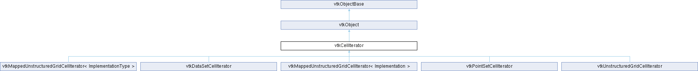

|
Etrek
|
|
Etrek
|
Efficient cell iterator for vtkDataSet topologies. More...
#include <vtkCellIterator.h>

Public Member Functions | |
| void | PrintSelf (ostream &os, vtkIndent indent) override |
| vtkAbstractTypeMacro (vtkCellIterator, vtkObject) | |
| void | InitTraversal () |
| void | GoToNextCell () |
| virtual bool | IsDoneWithTraversal ()=0 |
| int | GetCellType () |
| int | GetCellDimension () |
| virtual vtkIdType | GetCellId ()=0 |
| vtkIdList * | GetPointIds () |
| vtkPoints * | GetPoints () |
| vtkCellArray * | GetCellFaces () |
| vtkIdList * | GetSerializedCellFaces () |
| vtkIdList * | GetFaces () |
| void | GetCell (vtkGenericCell *cell) |
| vtkIdType | GetNumberOfPoints () |
| vtkIdType | GetNumberOfFaces () |
| Public Member Functions inherited from vtkObject | |
| vtkBaseTypeMacro (vtkObject, vtkObjectBase) | |
| virtual void | DebugOn () |
| virtual void | DebugOff () |
| bool | GetDebug () |
| void | SetDebug (bool debugFlag) |
| virtual void | Modified () |
| virtual vtkMTimeType | GetMTime () |
| void | PrintSelf (ostream &os, vtkIndent indent) override |
| void | RemoveObserver (unsigned long tag) |
| void | RemoveObservers (unsigned long event) |
| void | RemoveObservers (const char *event) |
| void | RemoveAllObservers () |
| vtkTypeBool | HasObserver (unsigned long event) |
| vtkTypeBool | HasObserver (const char *event) |
| vtkTypeBool | InvokeEvent (unsigned long event) |
| vtkTypeBool | InvokeEvent (const char *event) |
| std::string | GetObjectDescription () const override |
| unsigned long | AddObserver (unsigned long event, vtkCommand *, float priority=0.0f) |
| unsigned long | AddObserver (const char *event, vtkCommand *, float priority=0.0f) |
| vtkCommand * | GetCommand (unsigned long tag) |
| void | RemoveObserver (vtkCommand *) |
| void | RemoveObservers (unsigned long event, vtkCommand *) |
| void | RemoveObservers (const char *event, vtkCommand *) |
| vtkTypeBool | HasObserver (unsigned long event, vtkCommand *) |
| vtkTypeBool | HasObserver (const char *event, vtkCommand *) |
| template<class U, class T> | |
| unsigned long | AddObserver (unsigned long event, U observer, void(T::*callback)(), float priority=0.0f) |
| template<class U, class T> | |
| unsigned long | AddObserver (unsigned long event, U observer, void(T::*callback)(vtkObject *, unsigned long, void *), float priority=0.0f) |
| template<class U, class T> | |
| unsigned long | AddObserver (unsigned long event, U observer, bool(T::*callback)(vtkObject *, unsigned long, void *), float priority=0.0f) |
| vtkTypeBool | InvokeEvent (unsigned long event, void *callData) |
| vtkTypeBool | InvokeEvent (const char *event, void *callData) |
| virtual void | SetObjectName (const std::string &objectName) |
| virtual std::string | GetObjectName () const |
| Public Member Functions inherited from vtkObjectBase | |
| const char * | GetClassName () const |
| virtual vtkTypeBool | IsA (const char *name) |
| virtual vtkIdType | GetNumberOfGenerationsFromBase (const char *name) |
| virtual void | Delete () |
| virtual void | FastDelete () |
| void | InitializeObjectBase () |
| void | Print (ostream &os) |
| void | Register (vtkObjectBase *o) |
| virtual void | UnRegister (vtkObjectBase *o) |
| int | GetReferenceCount () |
| void | SetReferenceCount (int) |
| bool | GetIsInMemkind () const |
| virtual void | PrintHeader (ostream &os, vtkIndent indent) |
| virtual void | PrintTrailer (ostream &os, vtkIndent indent) |
| virtual bool | UsesGarbageCollector () const |
Protected Member Functions | |
| virtual void | ResetToFirstCell ()=0 |
| virtual void | IncrementToNextCell ()=0 |
| virtual void | FetchCellType ()=0 |
| virtual void | FetchPointIds ()=0 |
| virtual void | FetchPoints ()=0 |
| virtual void | FetchFaces () |
| Protected Member Functions inherited from vtkObject | |
| void | RegisterInternal (vtkObjectBase *, vtkTypeBool check) override |
| void | UnRegisterInternal (vtkObjectBase *, vtkTypeBool check) override |
| void | InternalGrabFocus (vtkCommand *mouseEvents, vtkCommand *keypressEvents=nullptr) |
| void | InternalReleaseFocus () |
| Protected Member Functions inherited from vtkObjectBase | |
| virtual void | ReportReferences (vtkGarbageCollector *) |
| vtkObjectBase (const vtkObjectBase &) | |
| void | operator= (const vtkObjectBase &) |
Protected Attributes | |
| int | CellType |
| vtkPoints * | Points |
| vtkIdList * | PointIds |
| vtkCellArray * | Faces |
| Protected Attributes inherited from vtkObject | |
| bool | Debug |
| vtkTimeStamp | MTime |
| vtkSubjectHelper * | SubjectHelper |
| std::string | ObjectName |
| Protected Attributes inherited from vtkObjectBase | |
| std::atomic< int32_t > | ReferenceCount |
| vtkWeakPointerBase ** | WeakPointers |
Additional Inherited Members | |
| Static Public Member Functions inherited from vtkObject | |
| static vtkObject * | New () |
| static void | BreakOnError () |
| static void | SetGlobalWarningDisplay (vtkTypeBool val) |
| static void | GlobalWarningDisplayOn () |
| static void | GlobalWarningDisplayOff () |
| static vtkTypeBool | GetGlobalWarningDisplay () |
| Static Public Member Functions inherited from vtkObjectBase | |
| static vtkTypeBool | IsTypeOf (const char *name) |
| static vtkIdType | GetNumberOfGenerationsFromBaseType (const char *name) |
| static vtkObjectBase * | New () |
| static void | SetMemkindDirectory (const char *directoryname) |
| static bool | GetUsingMemkind () |
| Static Protected Member Functions inherited from vtkObjectBase | |
| static vtkMallocingFunction | GetCurrentMallocFunction () |
| static vtkReallocingFunction | GetCurrentReallocFunction () |
| static vtkFreeingFunction | GetCurrentFreeFunction () |
| static vtkFreeingFunction | GetAlternateFreeFunction () |
Efficient cell iterator for vtkDataSet topologies.
vtkCellIterator provides a method for traversing cells in a data set. Call the vtkDataSet::NewCellIterator() method to use this class.
The cell is represented as a set of three pieces of information: The cell type, the ids of the points constituting the cell, and the points themselves. This iterator fetches these as needed. If only the cell type is used, the type is not looked up until GetCellType is called, and the point information is left uninitialized. This allows efficient screening of cells, since expensive point lookups may be skipped depending on the cell type/etc.
An example usage of this class:
The example above pulls in bits of information as needed to filter out cells that aren't relevant. The least expensive lookups are performed first (cell type, then point ids, then points/full cell) to prevent wasted cycles fetching unnecessary data. Also note that at the end of the loop, the iterator must be deleted as these iterators are vtkObject subclasses.
|
protectedpure virtual |
Lookup the cell type in the data set and store it in this->CellType.
Implemented in vtkDataSetCellIterator, vtkMappedUnstructuredGridCellIterator< Implementation >, vtkMappedUnstructuredGridCellIterator< ImplementationType >, vtkPointSetCellIterator, and vtkUnstructuredGridCellIterator.
|
inlineprotectedvirtual |
Lookup the cell faces in the data set and store them in this->Faces. Few data sets support faces, so this method has a no-op default implementation. See vtkUnstructuredGrid::GetFaceStream for a description of the layout that Faces should have.
Reimplemented in vtkUnstructuredGridCellIterator.
|
protectedpure virtual |
Lookup the cell point ids in the data set and store them in this->PointIds.
Implemented in vtkDataSetCellIterator, vtkMappedUnstructuredGridCellIterator< Implementation >, vtkMappedUnstructuredGridCellIterator< ImplementationType >, vtkPointSetCellIterator, and vtkUnstructuredGridCellIterator.
|
protectedpure virtual |
Lookup the cell points in the data set and store them in this->Points.
Implemented in vtkDataSetCellIterator, vtkMappedUnstructuredGridCellIterator< Implementation >, vtkMappedUnstructuredGridCellIterator< ImplementationType >, vtkPointSetCellIterator, and vtkUnstructuredGridCellIterator.
| void vtkCellIterator::GetCell | ( | vtkGenericCell * | cell | ) |
Write the current full cell information into the argument. This is usually a very expensive call, and should be avoided when possible. This should only be called when IsDoneWithTraversal() returns false.
| int vtkCellIterator::GetCellDimension | ( | ) |
Get the current cell dimension (0, 1, 2, or 3). This should only be called when IsDoneWithTraversal() returns false.
|
inline |
Get the faces for a polyhedral cell. This is only valid when CellType is VTK_POLYHEDRON.
|
pure virtual |
Get the id of the current cell.
Implemented in vtkDataSetCellIterator, vtkMappedUnstructuredGridCellIterator< Implementation >, vtkMappedUnstructuredGridCellIterator< ImplementationType >, vtkPointSetCellIterator, and vtkUnstructuredGridCellIterator.
|
inline |
Get the current cell type (e.g. VTK_LINE, VTK_VERTEX, VTK_TETRA, etc). This should only be called when IsDoneWithTraversal() returns false.
| vtkIdList * vtkCellIterator::GetFaces | ( | ) |
Get the faces for a polyhedral cell. This is only valid when CellType is VTK_POLYHEDRON.
|
inline |
Return the number of faces in the current cell. This should only be called when IsDoneWithTraversal() returns false.
|
inline |
Return the number of points in the current cell. This should only be called when IsDoneWithTraversal() returns false.
|
inline |
Get the ids of the points in the current cell. This should only be called when IsDoneWithTraversal() returns false.
|
inline |
Get the points in the current cell. This is usually a very expensive call, and should be avoided when possible. This should only be called when IsDoneWithTraversal() returns false.
|
inline |
Get a serialized view of the faces for a polyhedral cell. This is only valid when CellType is VTK_POLYHEDRON.
|
inline |
Increment to next cell. Always safe to call.
|
protectedpure virtual |
Update internal state to point to the next cell.
Implemented in vtkDataSetCellIterator, vtkMappedUnstructuredGridCellIterator< Implementation >, vtkMappedUnstructuredGridCellIterator< ImplementationType >, vtkPointSetCellIterator, and vtkUnstructuredGridCellIterator.
|
inline |
Reset to the first cell.
|
pure virtual |
Returns false while the iterator is valid. Always safe to call.
Implemented in vtkDataSetCellIterator, vtkMappedUnstructuredGridCellIterator< Implementation >, vtkMappedUnstructuredGridCellIterator< ImplementationType >, vtkPointSetCellIterator, and vtkUnstructuredGridCellIterator.
|
overridevirtual |
Methods invoked by print to print information about the object including superclasses. Typically not called by the user (use Print() instead) but used in the hierarchical print process to combine the output of several classes.
Reimplemented from vtkObjectBase.
Reimplemented in vtkDataSetCellIterator, vtkMappedUnstructuredGridCellIterator< Implementation >, vtkMappedUnstructuredGridCellIterator< ImplementationType >, vtkPointSetCellIterator, and vtkUnstructuredGridCellIterator.
|
protectedpure virtual |
Update internal state to point to the first cell.
Implemented in vtkDataSetCellIterator, vtkMappedUnstructuredGridCellIterator< Implementation >, vtkMappedUnstructuredGridCellIterator< ImplementationType >, vtkPointSetCellIterator, and vtkUnstructuredGridCellIterator.